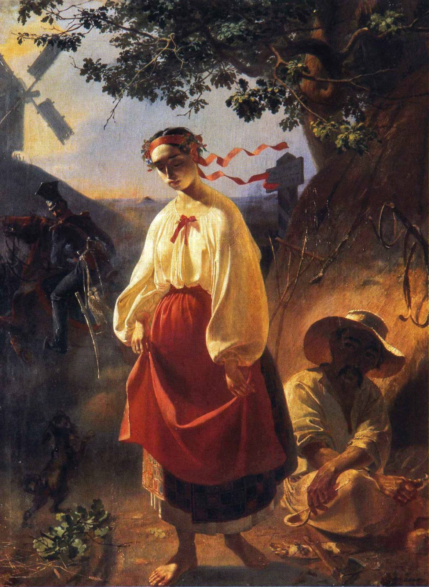

Тарас Шевченко
"Борітеся — поборете! Вам Бог помагає! За вас правда, за вас слава, І воля святая!"
Спадщина Кобзаря
Тарас Григорович Шевченко (відомий також як Кобзар) — український поет, прозаїк, мислитель, живописець, гравер, і громадський діяч. Національний герой і символ України. Його літературна спадщина, зокрема збірка "Кобзар", вважається основою сучасної української літератури.

"Катерина" (1842)
Один з найвідоміших творів Шевченка-художника, що ілюструє однойменну поему. Це яскравий приклад українського романтизму в живописі.
Детальніше про картину